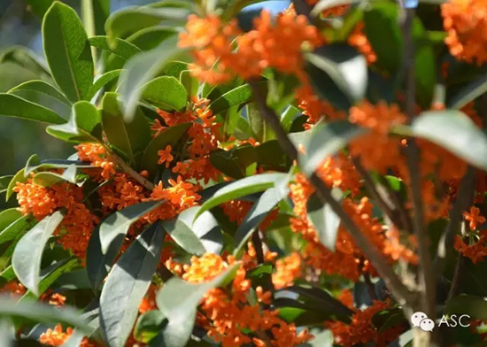
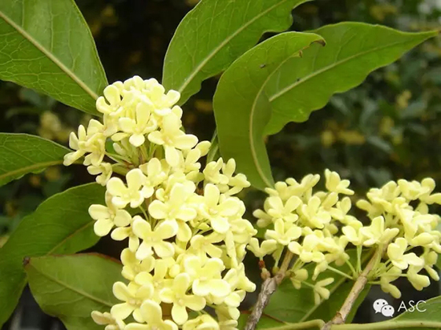

互惠动态
|
|
一句话形容一下中秋节？
提示：点击上方"ASC"↑免费订阅本刊
Duang~一年一度的中秋佳节即将来到，先预祝在滑屏的各位放假快乐啦！（貌似因为刚好周末，所以也没赚到）
中秋节是中国的传统节日，其重要意义自不必多说了。那么，如果让你用一句话来形容一下呢？亦或是提到中秋，立马想到的是什么呢？
小编先来说一下自己的好了。作为一名资深吃货，自然第一想到的是各种口味的月饼了，什么水果味，莲蓉蛋黄，五仁（貌似很遭嫌弃），还有广式，苏式等等。简直要把人的选择综合症给逼出来（默默咽下口水~~）
❉各式各样的月饼❉
再来就是自儿时就记忆深刻的“丹桂飘香”了，淡淡的桂花香，飘香万里，沁人心脾，让人感到舒服的同时也意识到了秋天的来到。
❉桂花❉


那么问题来了，你们知道外国人眼里的中秋是什么样子的么？
❉外国人眼中的中秋❉
据小编调查，只有那些常年在中国“摸爬滚打”的外国人，才晓得有月饼这回事。对于中国了解不深的仅知道两件事，一个就是吃了长生不老药的嫦娥，飞向了月亮。
❉嫦娥❉
另一个竟然是玉兔捣药！！！（小编猜想，外国人脑海中显示出的影像估计还是只流氓兔吧。）
那么，要是跟这些外国人介绍起来，该如何下手呢？
首先，自然是那个流传很久的神话故事，后羿射日、嫦娥奔月了（相比于远古的祭祀或是农业，貌似他们只能听懂这个了）。
❉后羿射日 嫦娥奔月❉
再就是，阖家团聚，赏月的习俗了。
❉阖家欢乐❉
当然还要提一下赏月必备的：石榴、菱角、月饼。
❉石榴、菱角、月饼❉